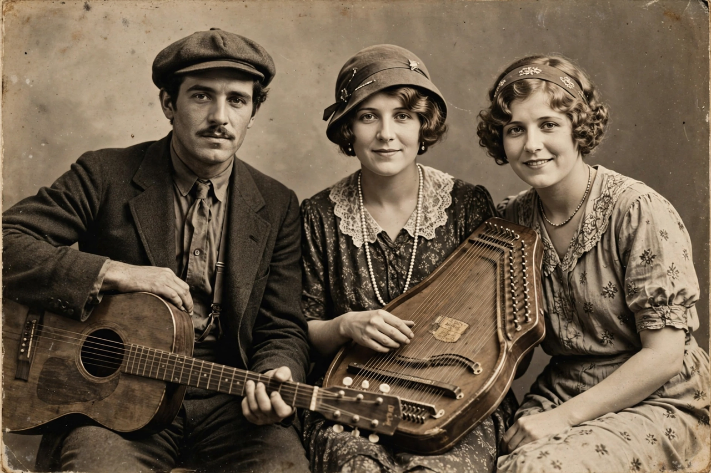

Carter Family
| Carter Family | |
|---|---|
 | |
| Origin | Maces Spring, Virginia, U.S. |
| Genres | Country, folk, gospel, old-time |
| Years active | 1927–1956 (original group) |
| Members | A. P. Carter, Sara Carter, Maybelle Carter |
| Notable songs | "Wildwood Flower", "Can the Circle Be Unbroken", "Keep on the Sunny Side", "Wabash Cannonball" |
The Carter Family was an American folk music group that recorded from 1927 to 1956 and is considered the "first family of country music". The original trio — A. P. Carter, his wife Sara Carter (née Dougherty), and his sister-in-law Maybelle Carter (née Addington) — came from the Clinch Mountain area of southwestern Virginia. Their recordings of Appalachian ballads, hymns and sentimental songs helped create the commercial country music industry.
Bristol sessions
In August 1927 the Carters travelled to Bristol, Tennessee, to audition for Ralph Peer of the Victor Talking Machine Company. The resulting "Bristol sessions" — which also launched Jimmie Rodgers — are often called the "Big Bang of Country Music". A.P. acted as song collector, travelling through the mountains to gather traditional material, which Sara sang in a deep, plain style while Maybelle developed the influential "Carter scratch" guitar technique, playing melody on the bass strings with her thumb while strumming rhythm with her fingers.
Career and later generations
The group recorded some 300 songs for Victor, ARC and Decca, including "Wildwood Flower", "Can the Circle Be Unbroken (By and By)" — adapted by A.P. from a hymn — and "Keep on the Sunny Side", their theme song. After A.P. and Sara divorced in 1939, Sara left the act; Maybelle continued as "Mother Maybelle and the Carter Sisters" with her daughters Helen, June and Anita. June Carter later married Johnny Cash.
Legacy
The Carter Family was inducted into the Country Music Hall of Fame in 1970, received a Grammy Lifetime Achievement Award in 2005, and profoundly influenced folk, country and rock musicians — from Woody Guthrie to Bob Dylan. Alongside the blues of Robert Johnson, their records define the founding repertoire of American roots music.